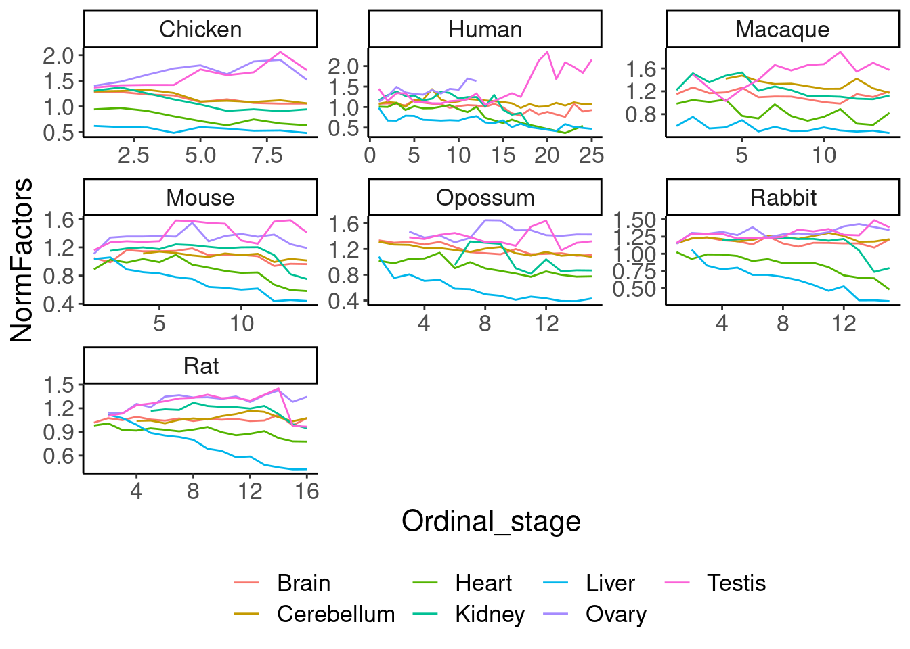

2024-10-03_ExplorePuzzling_UP_vs_Expression_Effects
2024-10-03
Last updated: 2024-10-14
Checks: 6 1
Knit directory:
2024_comparativesplicing/analysis/
This reproducible R Markdown analysis was created with workflowr (version 1.7.0). The Checks tab describes the reproducibility checks that were applied when the results were created. The Past versions tab lists the development history.
The R Markdown is untracked by Git. To know which version of the R
Markdown file created these results, you’ll want to first commit it to
the Git repo. If you’re still working on the analysis, you can ignore
this warning. When you’re finished, you can run
wflow_publish to commit the R Markdown file and build the
HTML.
Great job! The global environment was empty. Objects defined in the global environment can affect the analysis in your R Markdown file in unknown ways. For reproduciblity it’s best to always run the code in an empty environment.
The command set.seed(19900924) was run prior to running
the code in the R Markdown file. Setting a seed ensures that any results
that rely on randomness, e.g. subsampling or permutations, are
reproducible.
Great job! Recording the operating system, R version, and package versions is critical for reproducibility.
Nice! There were no cached chunks for this analysis, so you can be confident that you successfully produced the results during this run.
Great job! Using relative paths to the files within your workflowr project makes it easier to run your code on other machines.
Great! You are using Git for version control. Tracking code development and connecting the code version to the results is critical for reproducibility.
The results in this page were generated with repository version 172f74b. See the Past versions tab to see a history of the changes made to the R Markdown and HTML files.
Note that you need to be careful to ensure that all relevant files for
the analysis have been committed to Git prior to generating the results
(you can use wflow_publish or
wflow_git_commit). workflowr only checks the R Markdown
file, but you know if there are other scripts or data files that it
depends on. Below is the status of the Git repository when the results
were generated:
Ignored files:
Ignored: .DS_Store
Ignored: .Rhistory
Ignored: .Rproj.user/
Ignored: analysis/figure/
Ignored: code/.DS_Store
Ignored: code/.RData
Ignored: code/.Rhistory
Ignored: code/.ipynb_checkpoints/
Ignored: code/.snakemake/
Ignored: code/ChainFiles/
Ignored: code/CordosoMoreira_Fastq/
Ignored: code/Downloads/
Ignored: code/GenomeFiles/
Ignored: code/LiftoverJuncs/
Ignored: code/Log.out
Ignored: code/MazinLeafcutterAnalysis/
Ignored: code/Rplots.pdf
Ignored: code/Session.vim
Ignored: code/config/OldConfigs/2040822_Cordoso_Moreira_SampleList.tsv
Ignored: code/conservation/
Ignored: code/featureCounts/
Ignored: code/kaessmanAnalysis/
Ignored: code/kaessman_AS_dat/
Ignored: code/logs/
Ignored: code/rna-seq/
Ignored: code/rules/.MazinLeafcutterAnalysis.smk.swp
Ignored: code/scratch/
Ignored: code/scripts/.ipynb_checkpoints/
Ignored: code/scripts/.vscode/
Ignored: code/snakemake.log
Ignored: data/.DS_Store
Untracked files:
Untracked: analysis/.ipynb_checkpoints/
Untracked: analysis/2024-08-21_SpearmanFromPSI_WithinSpecies.Rmd
Untracked: analysis/2024-08-21_SpearmanFromPSI_WithinSpecies_AllSpecies.Rmd
Untracked: analysis/2024-08-21_SpearmanFromPSI_WithinSpecies_SampleStagesFixed.Rmd
Untracked: analysis/2024-08-24_BioMartLookupGenes.Rmd
Untracked: analysis/2024-08-29_ExploreJuncLiftovers.Rmd
Untracked: analysis/2024-08-29_OrganizeCrossSpeciesTables.Rmd
Untracked: analysis/2024-09-06_UnrpdoctuviveSplicingAndExpression.Rmd
Untracked: analysis/2024-09-09_Organize_ConserveddevASJuncs.Rmd
Untracked: analysis/2024-09-10_RedoMazinJuncAnalysisFixedClassifications.Rmd
Untracked: analysis/2024-09-23_FixMouseEnsemblBed12ToGtf.Rmd
Untracked: analysis/2024-09-30_ContinousExpressionSplicingModel.Rmd
Untracked: analysis/2024-09-30_ContinousTimeSplicingModel.Rmd
Untracked: analysis/2024-10-03_ExplorePuzzling_UP_vs_Expression_Effects.Rmd
Untracked: analysis/20240815_LiftoverJuncsTest.ipynb
Untracked: analysis/Untitled.ipynb
Untracked: code/config/CordosoGenomes_Extra_Gtfs.tsv
Untracked: code/config/GTEx_juncFileList.tsv
Untracked: code/envs/crossmap.yml
Untracked: code/envs/py27.yml
Untracked: code/rules/MazinLeafcutterAnalysis.smk
Untracked: code/scripts/FeatureCounts_to_Mat.R
Untracked: code/scripts/PrepAllJuncsFor_JunctionClassifier.R
Untracked: code/scripts/QQNorm_PSITable_ByTissue.R
Untracked: code/scripts/SpearmanCor_Mazin_LeafcutterPSI.R
Untracked: code/scripts/SpearmanCor_Mazin_log2RPKM.R
Untracked: code/scripts/Untitled.ipynb
Untracked: code/scripts/leafcutter_to_PSI_GTEX.R
Untracked: data/Stages_AsIn_CordosoMoreira.tsv
Untracked: data/Stages_AsIn_CordosoMoreira_Recoded.txt
Untracked: output/Conserved.devAS.leafcutter.tsv.gz
Untracked: output/Ensembl.GeneHumanHomologs.tsv.gz
Untracked: output/Ensembl.TranscriptInfo.tsv.gz
Untracked: output/GTEx_DS_DE_FromChao_CordosoTissuePairs.tsv.gz
Unstaged changes:
Modified: analysis/2024-07-16_Download_CordosoMoreira_Fastq.Rmd
Modified: analysis/index.Rmd
Modified: code/Snakefile
Modified: code/config/ChainFiles.tsv
Modified: code/config/Cordoso_Moreira_SampleList.tsv
Modified: code/config/STAR_Genome_List.tsv
Modified: code/config/samples.tsv
Modified: code/envs/bedparse.yml
Modified: code/module_workflows/snakemake-workflow_rna-seq
Modified: code/rules/LiftoverJuncs.smk
Modified: code/rules/common.smk
Modified: code/scripts/daiuc_leafcutter2
Modified: code/scripts/leafcutter2
Modified: output/QC/ReadCountsPerSamples.tsv
Staged changes:
Modified: .gitmodules
New: code/scripts/daiuc_leafcutter2
Note that any generated files, e.g. HTML, png, CSS, etc., are not included in this status report because it is ok for generated content to have uncommitted changes.
There are no past versions. Publish this analysis with
wflow_publish() to start tracking its development.
Intro
In a previous notebook (2024-09-10_RedoMazin…Rmd), I noted that unproductive junction spearman (leafcutter junction PSI vs developemental time in a particular species:tissue pair) is actually positively correlated with rpkm spearman (rpkm vs developmental time in a particular species:tissue pair). This is very confusing as we were expecting a negative correlation, and in previous analysis using Mazin et al’s PSI and RPKM values, the same type of analysis yielded the expected negative correlation in unproductive but not productive junctions. In that previous notebook, I also showed that the spearman coefs calculated from our leafcutter PSI is well correlated (R^2 ~ .8) with the spearman coefs calculated from Mazin, and same for expression, which is also puzzling that we get opposite effects when we correlate the splicing spearman vs expression spearmans. So here I’m going to start a fresh notebook to troubleshoot why this is. I have re-calculated spearman coefs, and linear model betas on standardized and inverse-normalized per tissue splicing and expression quantifications, and considered different metrics for expression (log2RPKM with psueodcount, log2TPM with pseudocount, log2CPM with no psueodocount). Here I will explore if any of these alternative metrics ‘fix’ the problem, and explore other things that might fix the problem, and try to better figure out what the problem really is by more closely investigating a couple example junctions that might highlight the problem.
Analysis
load libraries, set plot style
library(tidyverse)
library(data.table)
library(qvalue)
library(edgeR)
# Set theme
theme_set(
theme_classic() +
theme(text=element_text(size=16, family="Helvetica")))
# I use layer a lot, to rotate long x-axis labels
Rotate_x_labels <- theme(axis.text.x = element_text(angle = 45, vjust = 1, hjust=1))
sample_n_of <- function(data, size, ...) {
dots <- quos(...)
group_ids <- data %>%
group_by(!!! dots) %>%
group_indices()
sampled_groups <- sample(unique(group_ids), size)
data %>%
filter(group_ids %in% sampled_groups)
}Read in data… I wrote some tables for Yang that already containing most of the relevant data in a fairly tidy table…
dat <- fread("../code/scratch/ForYang.AllSpearmanCoefsFromMyProcessedData.tsv.gz")Firstly, let’s recreate the plot in question…
dat %>%
filter(q.splicing < 0.1) %>%
## select one representative junc per cluster
group_by(OriginGenome, Tissue, cluster) %>%
mutate(Contains_Noncoding = any(ProductivityLabel == "UP")) %>%
ungroup() %>%
arrange(OriginGenome, Tissue, cluster, Contains_Noncoding, desc(Coding), desc(abs(corr.splicing))) %>%
distinct(OriginGenome, Tissue, cluster, .keep_all=T) %>%
##
mutate(SplicingAndExpresionCoefSameSign = sign(corr.splicing)==sign(corr.expression)) %>%
count(Tissue, Species.short, Coding, SplicingAndExpresionCoefSameSign) %>%
filter(!is.na(SplicingAndExpresionCoefSameSign)) %>%
group_by(Tissue, Species.short, Coding) %>%
mutate(N = sum(n)) %>%
ungroup() %>%
mutate(Percent = n/N*100) %>%
filter(SplicingAndExpresionCoefSameSign) %>%
mutate(Coding = if_else(Coding, "Productive", "Unproductive")) %>%
ggplot(aes(x=Species.short, y=Tissue, fill=Percent)) +
geom_tile() +
scale_fill_gradient2(midpoint=50) +
geom_text(aes(label=N), size=3) +
facet_grid(~Coding) +
Rotate_x_labels +
labs(caption=str_wrap("fraction events where splicing coef same sign as expression coef, among signif splicing coefs, one representative junc per clust", 35), x="Species", fill="Percent in Q1+Q3")dat %>%
filter(q.splicing < 0.1) %>%
## select one representative junc per cluster
group_by(OriginGenome, Tissue, cluster) %>%
mutate(Contains_Noncoding = any(ProductivityLabel == "UP")) %>%
ungroup() %>%
arrange(OriginGenome, Tissue, cluster, Contains_Noncoding, desc(Coding), desc(abs(corr.splicing))) %>%
distinct(OriginGenome, Tissue, cluster, .keep_all=T) %>%
##
group_by(Tissue, Species.short, Coding) %>%
summarise(SpearmanSummary = cor(corr.splicing, corr.expression, method='s', use="pairwise.complete.obs"),
N = n()) %>%
ungroup() %>%
mutate(Coding = if_else(Coding, "Productive", "Unproductive")) %>%
ggplot(aes(x=Species.short, y=Tissue, fill=SpearmanSummary)) +
geom_tile() +
scale_fill_gradient2(midpoint=0) +
geom_text(aes(label=N), size=3) +
facet_grid(~Coding) +
Rotate_x_labels +
labs(caption=str_wrap("Spearman of expression vs splicing effect sizes (spearman over development stages", 35), x="Species", fill=NULL)Also, let’s recreate the plot using Mazin’s PSI/RPKM quantifications (just for Rabbit, since that is the only species where I don’t have to liftover juncs to a different genome to combine rows from the table based on Mazin’s PSI/RPKM quantifications with my own rows)
MazinQuantification.Spearman.dat <- read_tsv("../code/scratch/Rabbit_CombinedMazinAndMySpearmans.tsv.gz")
MazinQuantification.Spearman.dat %>%
ggplot(aes(x=corr.splicing, y=corr.splicing.MazinPSI)) +
geom_point(alpha=0.1) +
facet_wrap(~Tissue) +
labs(x="corr.splicing.leafcutterPSI", title="splicing spearmans are well correlated", caption="Rabbit AS events only")
MazinQuantification.Spearman.dat %>%
ggplot(aes(x=corr.expression, y=corr.expression.MazinRPKM)) +
geom_point(alpha=0.1) +
facet_wrap(~Tissue) +
labs(x="corr.splicing.My.RPKM", title="expression spearmans are well correlated")MazinQuantification.Spearman.dat %>%
drop_na() %>%
group_by(Tissue, Coding) %>%
summarise(
MyExpression_vs_MySplicing = cor(corr.splicing, corr.expression, method='s'),
MazinExpression_vs_MySplicing = cor(corr.splicing, corr.expression.MazinRPKM, method='s'),
MazinExpression_vs_MazinSplicing = cor(corr.splicing.MazinPSI, corr.expression.MazinRPKM, method='s'),
MyExpression_vs_MazinSplicing = cor(corr.splicing.MazinPSI, corr.expression, method='s'),
n = n()
) %>%
ungroup() %>%
mutate(Coding = if_else(Coding, "Productive", "Unproductive")) %>%
pivot_longer(names_to = "Comparison", values_to = "SpearmanOfSplicingVsExpressionEffectSizes", -c("Tissue", "Coding", "n")) %>%
ggplot(aes(x=Comparison, y=Tissue, fill=SpearmanOfSplicingVsExpressionEffectSizes)) +
geom_tile() +
scale_fill_gradient2(midpoint=0) +
geom_text(aes(label=n), size=3) +
facet_grid(~Coding) +
Rotate_x_labels +
theme(legend.position = "bottom")Ok, actually maybe that fixed things, albeit our red is a little less red, but maybe that is just expected with leafcutter being a bit noiser cause it uses less data per event. In my last notebook I was actually using TPM, which I think was problematic. Now at least I have the right sign, for the subset of events that we also use in Mazin… Mabye just using RPKM, and using a minimum expression level, will fix things across species…
Let’s explore that a bit…
expression.spearman.many.ways <- Sys.glob("../code/MazinLeafcutterAnalysis/ExpressionSpearmanCoefs/*.Extended.tsv.gz") %>%
setNames(str_replace(., "../code/MazinLeafcutterAnalysis/ExpressionSpearmanCoefs/(.+?)\\.(log2.+?).Extended.tsv.gz", "\\1;\\2")) %>%
lapply(fread) %>%
bind_rows(.id="OriginGenome_Metric") %>%
separate(OriginGenome_Metric, into=c("OriginGenome", "ExpressionMetric"), sep=";")
expression.spearman.many.ways %>%
count(OriginGenome, ExpressionMetric) OriginGenome ExpressionMetric n
1: Chicken_UCSC.galGal6_ensv101 log2cpm 170492
2: Chicken_UCSC.galGal6_ensv101 log2rpkm 170492
3: Chicken_UCSC.galGal6_ensv101 log2tpm 170492
4: Human_UCSC.hg38_GencodeComprehensive46 log2cpm 441980
5: Human_UCSC.hg38_GencodeComprehensive46 log2rpkm 441980
6: Human_UCSC.hg38_GencodeComprehensive46 log2tpm 441980
7: Macaque_UCSC.rheMac10_ensv101 log2cpm 212592
8: Macaque_UCSC.rheMac10_ensv101 log2rpkm 212592
9: Macaque_UCSC.rheMac10_ensv101 log2tpm 212592
10: Mouse_UCSC.mm39_GencodeComprehensive46 log2cpm 400302
11: Mouse_UCSC.mm39_GencodeComprehensive46 log2rpkm 400302
12: Mouse_UCSC.mm39_GencodeComprehensive46 log2tpm 400302
13: Opossum_UCSC.monDom5_ensvUnknown log2cpm 212583
14: Opossum_UCSC.monDom5_ensvUnknown log2rpkm 212583
15: Opossum_UCSC.monDom5_ensvUnknown log2tpm 212583
16: Rabbit_UCSC.oryCun2_ensv101 log2cpm 207109
17: Rabbit_UCSC.oryCun2_ensv101 log2rpkm 207109
18: Rabbit_UCSC.oryCun2_ensv101 log2tpm 207109
19: Rat_UCSC.rn7_RefSeqv108 log2cpm 233058
20: Rat_UCSC.rn7_RefSeqv108 log2rpkm 233058
21: Rat_UCSC.rn7_RefSeqv108 log2tpm 233058
OriginGenome ExpressionMetric nexpression.spearman.many.ways %>%
filter(OriginGenome == "Rabbit_UCSC.oryCun2_ensv101") %>%
group_by(ExpressionMetric, Tissue) %>%
mutate(MaxExpressionRank = rank(desc(maxExpression))) %>%
mutate(IsTop10KExpressedByMetric = MaxExpressionRank < 12000) %>%
ungroup() %>%
# count(IsTop10KExpressedByMetric, ExpressionMetric, Tissue)
dplyr::select(UnNormSpearman_estimate,spearman_estimate, lm_estimate, maxExpression, Tissue, Geneid,ExpressionMetric, IsTop10KExpressedByMetric ) %>%
mutate(IsTop10KExpressedByMetric = if_else(IsTop10KExpressedByMetric, "Top12KExpressedByMetric", "LowlyExpressed")) %>%
pivot_longer(names_to = "CorrelationSummaryMetric", values_to = "value", c("UnNormSpearman_estimate", "spearman_estimate", "lm_estimate")) %>%
mutate(CorrelationSummaryMetric = str_replace_all(CorrelationSummaryMetric, "_", "\n")) %>%
ggplot(aes(x=value, fill=IsTop10KExpressedByMetric)) +
geom_histogram(position='stack') +
facet_grid(ExpressionMetric~CorrelationSummaryMetric~Tissue, scales="free") +
xlim(c(-1.5,1.5)) +
labs(fill=NULL) +
theme(strip.text = element_text(size = 8), legend.position = "bottom")Ok, so yes, TPM gets some things weird in particular tissues, particularly for lowly expressed genes.
In any case, my intuition is that one thing that might work is to use expression spearman based on log2rpkm but filter for well expressed genes.
expression.spearman.many.ways %>%
filter(ExpressionMetric == "log2rpkm") %>%
ggplot(aes(x=maxExpression)) +
geom_histogram() +
facet_wrap(~Tissue)dat %>%
filter(q.splicing < 0.1) %>%
## select one representative junc per cluster
group_by(OriginGenome, Tissue, cluster) %>%
mutate(Contains_Noncoding = any(ProductivityLabel == "UP")) %>%
ungroup() %>%
arrange(OriginGenome, Tissue, cluster, Contains_Noncoding, desc(Coding), desc(abs(corr.splicing))) %>%
distinct(OriginGenome, Tissue, cluster, .keep_all=T) %>%
##
inner_join(
expression.spearman.many.ways %>%
filter(ExpressionMetric == "log2rpkm") %>%
dplyr::select(OriginGenome, lm_estimate, spearman_estimate, UnNormSpearman_estimate, maxExpression, Tissue,Geneid),
by=c("OriginGenome", "Tissue", "Gene_name"="Geneid")
) %>%
mutate(IsMaxGreatherThanThreshold = if_else(maxExpression > 2, "High Expression", "Low Expression")) %>%
group_by(Tissue, Species.short, Coding, IsMaxGreatherThanThreshold) %>%
summarise(SpearmanSummary = cor(corr.splicing, lm_estimate, method='s', use="pairwise.complete.obs"),
N = n()) %>%
ungroup() %>%
mutate(Coding = if_else(Coding, "Productive", "Unproductive")) %>%
ggplot(aes(x=Species.short, y=Tissue, fill=SpearmanSummary)) +
geom_tile() +
scale_fill_gradient2(midpoint=0) +
geom_text(aes(label=N), size=3) +
facet_grid(IsMaxGreatherThanThreshold~Coding) +
Rotate_x_labels +
labs(caption=str_wrap("Spearman of expression vs splicing effect sizes (spearman over development stages).", 35), x="Species", fill=NULL)Hmm. that still doesn’t work.
Even though it seemed to maybe work for the Mazin AS events as shown below…
dat %>%
filter(q.splicing < 0.1) %>%
##
left_join(
MazinQuantification.Spearman.dat %>%
dplyr::select(Tissue, junc, OriginGenome, corr.splicing.MazinPSI) %>%
filter(!is.na(corr.splicing.MazinPSI)) %>%
mutate(IsQuantifiedByMazin = "Defined in Mazin")
) %>%
replace_na(list(IsQuantifiedByMazin = "leafcuter-unique event")) %>%
group_by(Tissue, Species.short, Coding, IsQuantifiedByMazin) %>%
summarise(SpearmanSummary = cor(corr.splicing, corr.expression, method='s', use="pairwise.complete.obs"),
N = n()) %>%
ungroup() %>%
mutate(Coding = if_else(Coding, "Productive", "Unproductive")) %>%
ggplot(aes(x=Species.short, y=Tissue, fill=SpearmanSummary)) +
geom_tile() +
scale_fill_gradient2(midpoint=0) +
geom_text(aes(label=N), size=3) +
facet_grid(IsQuantifiedByMazin~Coding) +
Rotate_x_labels +
labs(caption=str_wrap("Spearman of expression vs splicing effect sizes (spearman over development stages).", 35), x="Species", fill=NULL)Ok, so what’s different about the Mazin defined events that makes them ‘work’. Perhaps I should see if it’s related to max junc count or PSI within timecourse.
set.seed(0)
SetsToCompare <- dat %>%
filter(q.splicing < 0.1) %>%
filter(OriginGenome == "Rabbit_UCSC.oryCun2_ensv101") %>%
filter(ProductivityLabel == "UP") %>%
left_join(
MazinQuantification.Spearman.dat %>%
dplyr::select(Tissue, junc, OriginGenome, corr.splicing.MazinPSI) %>%
filter(!is.na(corr.splicing.MazinPSI)) %>%
mutate(IsQuantifiedByMazin = "Defined in Mazin")
) %>%
replace_na(list(IsQuantifiedByMazin = "leafcuter-unique event")) %>%
group_by(junc) %>%
mutate(IsJuncQuantifiedByMazin = any(IsQuantifiedByMazin=="Defined in Mazin")) %>%
ungroup()
CordosoSamples <- read_tsv("../code/config/Cordoso_Moreira_SampleList.tsv")
Rabbit.PSI <- fread("../code/rna-seq/SplicingAnalysis/leafcutter/Rabbit_UCSC.oryCun2_ensv101/juncTableBeds/PSI.sorted.bed.gz") %>%
filter(junc %in% SetsToCompare$junc) %>%
pivot_longer(names_to = "ID", values_to = "value", -c(1:6)) %>%
inner_join(
CordosoSamples %>%
filter(`Used library?` %in% c("yes", "Yes")) %>%
separate_rows(Tissue_ForDevelopementalAnalysis, sep=",") %>%
dplyr::select(ID,Tissue_ForDevelopementalAnalysis, Ordinal_stage )
)
Rabbit.JuncCounts <- fread("../code/rna-seq/SplicingAnalysis/leafcutter/Rabbit_UCSC.oryCun2_ensv101/juncTableBeds/JuncCounts.sorted.bed.gz") %>%
filter(junc %in% SetsToCompare$junc) %>%
pivot_longer(names_to = "ID", values_to = "value", -c(1:6)) %>%
inner_join(
CordosoSamples %>%
filter(`Used library?` %in% c("yes", "Yes")) %>%
separate_rows(Tissue_ForDevelopementalAnalysis, sep=",") %>%
dplyr::select(ID,Tissue_ForDevelopementalAnalysis, Ordinal_stage )
)
Rabbit.PSI %>%
inner_join(
SetsToCompare %>%
dplyr::select(junc, Tissue_ForDevelopementalAnalysis=Tissue, IsQuantifiedByMazin, IsJuncQuantifiedByMazin, ProductivityLabel)
) %>%
group_by(Tissue_ForDevelopementalAnalysis, junc, IsQuantifiedByMazin) %>%
summarise(maxValue = max(value, na.rm=T)) %>%
ungroup() %>%
ggplot(aes(x=maxValue, color=IsQuantifiedByMazin)) +
stat_ecdf() +
facet_wrap(~Tissue_ForDevelopementalAnalysis)Rabbit.JuncCounts %>%
inner_join(
SetsToCompare %>%
dplyr::select(junc, Tissue_ForDevelopementalAnalysis=Tissue, IsQuantifiedByMazin, IsJuncQuantifiedByMazin, ProductivityLabel)
) %>%
group_by(Tissue_ForDevelopementalAnalysis, junc, IsQuantifiedByMazin) %>%
summarise(maxValue = max(value, na.rm=T)) %>%
ungroup() %>%
ggplot(aes(x=maxValue, color=IsQuantifiedByMazin)) +
stat_ecdf() +
geom_vline(xintercept = 10) +
scale_x_continuous(trans='log10') +
facet_wrap(~Tissue_ForDevelopementalAnalysis) +
labs(y="ecdf", x="Max number read across samples within tissue timecourse")Ok from this perhaps a reasonable filter is to say “a junc must have 10 counts in at least one sample along the developmental time course to consider for downstream analysis”.
SignificantJuncs <- dat %>%
filter(q.splicing < 0.1)
MaxJuncCountsPerTimecourse <- str_glue("../code/rna-seq/SplicingAnalysis/leafcutter/{unique(SignificantJuncs$OriginGenome)}/juncTableBeds/JuncCounts.sorted.bed.gz") %>%
setNames(str_replace(., "../code/rna-seq/SplicingAnalysis/leafcutter/(.+?)/juncTableBeds/JuncCounts.sorted.bed.gz", "\\1")) %>%
lapply(fread) %>%
lapply(function(x) filter(x, junc %in% SignificantJuncs$junc)) %>%
lapply(function(x) pivot_longer(x, names_to = "ID", values_to = "value", -c(1:6))) %>%
lapply(function(x) inner_join(x,
CordosoSamples %>%
filter(`Used library?` %in% c("yes", "Yes")) %>%
separate_rows(Tissue_ForDevelopementalAnalysis, sep=",") %>%
dplyr::select(ID,Tissue_ForDevelopementalAnalysis, Ordinal_stage )
)) %>%
bind_rows(.id="OriginGenome") %>%
group_by(OriginGenome, junc, Tissue_ForDevelopementalAnalysis) %>%
summarise(maxJuncCount = max(value)) %>%
ungroup()
dat %>%
filter(q.splicing < 0.1) %>%
## select one representative junc per cluster
# group_by(OriginGenome, Tissue, cluster) %>%
# mutate(Contains_Noncoding = any(ProductivityLabel == "UP")) %>%
# ungroup() %>%
# arrange(OriginGenome, Tissue, cluster, Contains_Noncoding, desc(Coding), desc(abs(corr.splicing))) %>%
# distinct(OriginGenome, Tissue, cluster, .keep_all=T) %>%
##
inner_join(
MaxJuncCountsPerTimecourse,
by=c("OriginGenome", "Tissue"="Tissue_ForDevelopementalAnalysis", "junc")
) %>%
mutate(IsMaxGreatherThanThreshold = if_else(maxJuncCount > 10, "Passes", "Doesn't pass")) %>%
group_by(Tissue, Species.short, Coding, IsMaxGreatherThanThreshold) %>%
summarise(SpearmanSummary = cor(corr.splicing, corr.expression, method='s', use="pairwise.complete.obs"),
N = n()) %>%
ungroup() %>%
mutate(Coding = if_else(Coding, "Productive", "Unproductive")) %>%
ggplot(aes(x=Species.short, y=Tissue, fill=SpearmanSummary)) +
geom_tile() +
scale_fill_gradient2(midpoint=0) +
geom_text(aes(label=N), size=3) +
facet_grid(IsMaxGreatherThanThreshold~Coding) +
Rotate_x_labels +
labs(caption=str_wrap("Spearman of expression vs splicing effect sizes (spearman over development stages).\nPasses means >10 reads in at least one sample in timecourse", 35), x="Species", fill=NULL)Well that is different between those that pass the threshold and those that don’t, but not in the expected way.
Let’s look at the scatterplot underlying one cell (eg Human brain)
dat %>%
filter(q.splicing < 0.1) %>%
filter(Species.short == "Human" & Tissue == "Brain") %>%
inner_join(
MaxJuncCountsPerTimecourse,
by=c("OriginGenome", "Tissue"="Tissue_ForDevelopementalAnalysis", "junc")
) %>%
mutate(IsMaxGreatherThanThreshold = if_else(maxJuncCount > 10, "Passes", "Doesn't pass")) %>%
ggplot(aes(x= corr.splicing, y=corr.expression)) +
geom_point(alpha=0.05) +
geom_smooth(method='lm', se=F) +
facet_grid(ProductivityLabel~IsMaxGreatherThanThreshold)That didn’t tell me anything particularly new. I wonder if using the within-tissue qqnormed splicing quantifications might help?
qqnorm.splicing <- Sys.glob("../code/MazinLeafcutterAnalysis/Splicing_qqNormed/*/DevAS.tsv.gz") %>%
setNames(str_replace(., "../code/MazinLeafcutterAnalysis/Splicing_qqNormed/(.+?)/DevAS.tsv.gz", "\\1")) %>%
lapply(fread) %>%
bind_rows(.id = "OriginGenome")
dat %>%
inner_join(
qqnorm.splicing,
by=c("OriginGenome", "Tissue"="Tissue_ForDevelopementalAnalysis", "junc")
) %>%
group_by(Tissue, OriginGenome) %>%
mutate(spearman_q = qvalue(spearman_p)$qvalues) %>%
ungroup() %>%
filter(spearman_q < 0.1) %>%
## select one representative junc per cluster
# group_by(OriginGenome, Tissue, cluster) %>%
# mutate(Contains_Noncoding = any(ProductivityLabel == "UP")) %>%
# ungroup() %>%
# arrange(OriginGenome, Tissue, cluster, Contains_Noncoding, desc(Coding), desc(abs(corr.splicing))) %>%
# distinct(OriginGenome, Tissue, cluster, .keep_all=T) %>%
##
inner_join(
MaxJuncCountsPerTimecourse,
by=c("OriginGenome", "Tissue"="Tissue_ForDevelopementalAnalysis", "junc")
) %>%
mutate(IsMaxGreatherThanThreshold = if_else(maxJuncCount > 10, "Passes", "Doesn't pass")) %>%
group_by(Tissue, Species.short, Coding, IsMaxGreatherThanThreshold) %>%
summarise(SpearmanSummary = cor(spearman_estimate, corr.expression, method='s', use="pairwise.complete.obs"),
N = n()) %>%
ungroup() %>%
mutate(Coding = if_else(Coding, "Productive", "Unproductive")) %>%
ggplot(aes(x=Species.short, y=Tissue, fill=SpearmanSummary)) +
geom_tile() +
scale_fill_gradient2(midpoint=0) +
geom_text(aes(label=N), size=3) +
facet_grid(IsMaxGreatherThanThreshold~Coding) +
Rotate_x_labels +
labs(caption=str_wrap("Spearman of expression vs splicing effect sizes (spearman over development stages, PSI is qqnormed).\nPasses means >10 reads in at least one sample in timecourse", 35), x="Species", fill=NULL)Ok, that didn’t make a difference. I suppose the next thing to do is to check out of the events that “Pass”, which ones are quantified in Mazin, since those “work”, versus those that aren’t quantified in Mazin.
Let’s look in two ways: looking at junc counts or PSI over time course, and also look at junc position in relation to gene.
Let’s first subset the juncs that are defined in Mazin, but do not have the a spearman (because of empty data or 0’s) in a particular tissue which may or may not also have a spearman from leafcutter… just looking at unproductive events here.
SetsToCompare %>%
inner_join(
MaxJuncCountsPerTimecourse %>%
dplyr::rename(Tissue=Tissue_ForDevelopementalAnalysis)
) %>%
filter(maxJuncCount > 10) %>%
filter(IsJuncQuantifiedByMazin) %>%
ggplot(aes(x=corr.splicing, y=corr.expression, color=IsQuantifiedByMazin)) +
geom_point() +
geom_smooth(method='lm', se=F) +
facet_wrap(~Tissue) +
labs(caption="Defined in Mazin")SetsToCompare %>%
inner_join(
MaxJuncCountsPerTimecourse %>%
dplyr::rename(Tissue=Tissue_ForDevelopementalAnalysis)
) %>%
filter(maxJuncCount > 10) %>%
filter(IsJuncQuantifiedByMazin) %>%
ggplot(aes(x=corr.splicing, y=corr.expression, color=IsQuantifiedByMazin)) +
geom_point() +
geom_smooth(method='lm', se=F)SetsToCompare %>%
inner_join(
MaxJuncCountsPerTimecourse %>%
dplyr::rename(Tissue=Tissue_ForDevelopementalAnalysis)
) %>%
filter(maxJuncCount > 10) %>%
# filter(IsJuncQuantifiedByMazin) %>%
ggplot(aes(x=corr.splicing, y=corr.expression, color=IsQuantifiedByMazin)) +
geom_point(alpha=0.05) +
geom_smooth(method='lm', se=F) +
facet_wrap(~IsJuncQuantifiedByMazin) +
labs(caption="Defined in Mazin")Ok, so interestingly, within the juncs that Mazin quantifies, the in tissues where Mazin does not quantify them (or at least there are mostly 0’s or NA’s), are more positively correlated with expression. Let’s look at the junc counts and PSI for these.. And I also notice such an abundance of corr.expression near 1. I suspect this might again be related to pseudocounts in expression, maybe i should change out this back for logcpm with no pseudocount.
SetsToCompare %>%
inner_join(
MaxJuncCountsPerTimecourse %>%
dplyr::rename(Tissue=Tissue_ForDevelopementalAnalysis)
) %>%
filter(maxJuncCount > 10) %>%
filter(IsJuncQuantifiedByMazin) %>%
inner_join(
Rabbit.JuncCounts %>%
dplyr::select(Tissue=Tissue_ForDevelopementalAnalysis, ID, junc, value, Ordinal_stage)
) %>%
sample_n_of(12, junc) %>%
ggplot(aes(x=Ordinal_stage, y=value, color=Tissue)) +
geom_point(alpha=0.1) +
geom_smooth(se=F, aes(linetype = IsQuantifiedByMazin)) +
facet_wrap(~junc, scales="free") +
labs(y="Junc counts")SetsToCompare %>%
inner_join(
MaxJuncCountsPerTimecourse %>%
dplyr::rename(Tissue=Tissue_ForDevelopementalAnalysis)
) %>%
filter(maxJuncCount > 10) %>%
filter(IsJuncQuantifiedByMazin) %>%
inner_join(
Rabbit.PSI %>%
dplyr::select(Tissue=Tissue_ForDevelopementalAnalysis, ID, junc, value, Ordinal_stage)
) %>%
sample_n_of(12, junc) %>%
ggplot(aes(x=Ordinal_stage, y=value, color=Tissue)) +
geom_point(alpha=0.1) +
geom_smooth(se=F, aes(linetype = IsQuantifiedByMazin)) +
facet_wrap(~junc, scales="free") +
labs(y="leaf PSI")Nothing obvious there. Maybe rather than selecting ones to highlight based on whether it is included in Mazin, I should go by whether leafcutter gets it ‘wrong’ but mazin gets it ‘right’… But actually if you limit to ones that Mazin get’s it right, leafcutter generally get’s it right too, just not as right.
Maybe we should consider a deltaPSI threshold. For now, Let’s just use the dPSI between the median PSI of the first six samples in the timecourse versus the last six.
JuncsToConsider <- dat %>%
filter(q.splicing < 0.1) %>%
distinct(junc, OriginGenome)
PSI.devAS.AllSpecies <- str_glue("../code/rna-seq/SplicingAnalysis/leafcutter/{unique(JuncsToConsider$OriginGenome)}/juncTableBeds/PSI.sorted.bed.gz") %>%
as.character() %>%
setNames(str_replace(., "../code/rna-seq/SplicingAnalysis/leafcutter/(.+?)/juncTableBeds/PSI.sorted.bed.gz", "\\1")) %>%
lapply(fread) %>%
lapply(function(x) filter(x, x$junc %in% JuncsToConsider$junc)) %>%
lapply(function(x) pivot_longer(x, names_to = "ID", values_to = "value", -c(1:6))) %>%
lapply(function(x) inner_join(x,
CordosoSamples %>%
filter(`Used library?` %in% c("yes", "Yes")) %>%
separate_rows(Tissue_ForDevelopementalAnalysis, sep=",") %>%
dplyr::select(ID,Tissue_ForDevelopementalAnalysis, Ordinal_stage )
)) %>%
bind_rows(.id="OriginGenome")Now let’s calculate dPSI, based on first and last… 6?… samples
CordosoSamples %>%
filter(`Used library?` %in% c("yes", "Yes")) %>%
separate_rows(Tissue_ForDevelopementalAnalysis, sep=",") %>%
dplyr::select(ID,Tissue_ForDevelopementalAnalysis, ID_Species, Ordinal_stage ) %>%
distinct(ID_Species, Tissue_ForDevelopementalAnalysis, Ordinal_stage) %>%
count(ID_Species,Tissue_ForDevelopementalAnalysis) %>%
ggplot(aes(x=Tissue_ForDevelopementalAnalysis, y=n)) +
geom_col() +
geom_text(aes(label=n), vjust=1, color="white") +
facet_wrap(~ID_Species) +
Rotate_x_labelsWell some species/tissues only have 9 timepoints. Maybe I’ll just divide each timecourse into a front half and latter half and calculate median PSI in each
dPSI.devAS.AllSpecies <- PSI.devAS.AllSpecies %>%
dplyr::select(junc, ID, value, OriginGenome, Tissue_ForDevelopementalAnalysis) %>%
inner_join(
CordosoSamples %>%
filter(`Used library?` %in% c("yes", "Yes")) %>%
separate_rows(Tissue_ForDevelopementalAnalysis, sep=",") %>%
dplyr::select(ID,Tissue_ForDevelopementalAnalysis, ID_Species, Ordinal_stage ) %>%
group_by(Tissue_ForDevelopementalAnalysis, ID_Species) %>%
mutate(StagePercentRank = percent_rank(Ordinal_stage)) %>%
ungroup() %>%
mutate(FrontOrBackHalf = if_else(StagePercentRank < 0.5, "Front", "Back")) %>%
dplyr::select(FrontOrBackHalf, Ordinal_stage, ID, Tissue_ForDevelopementalAnalysis),
by=c("ID", "Tissue_ForDevelopementalAnalysis")
) %>%
group_by(OriginGenome, junc, FrontOrBackHalf, Tissue_ForDevelopementalAnalysis) %>%
summarise(medPSI = median(value)) %>%
ungroup() %>%
pivot_wider(names_from = "FrontOrBackHalf", values_from = "medPSI") %>%
mutate(dPSI = Back - Front)
head(dPSI.devAS.AllSpecies)# A tibble: 6 × 6
OriginGenome junc Tissue_ForDevel… Back Front dPSI
<chr> <chr> <chr> <dbl> <dbl> <dbl>
1 Chicken_UCSC.galGal6_ensv101 chr10:1025164… Brain NA NA NA
2 Chicken_UCSC.galGal6_ensv101 chr10:1025164… Cerebellum 33.3 NA NA
3 Chicken_UCSC.galGal6_ensv101 chr10:1025164… Heart NA NA NA
4 Chicken_UCSC.galGal6_ensv101 chr10:1025164… Kidney NA NA NA
5 Chicken_UCSC.galGal6_ensv101 chr10:1025164… Liver NA NA NA
6 Chicken_UCSC.galGal6_ensv101 chr10:1025164… Ovary NA NA NAOk now let’s recreate the heatmap after faceting by whether they pass the dPSI>10 threshold
dat %>%
filter(q.splicing < 0.1) %>%
## select one representative junc per cluster
# group_by(OriginGenome, Tissue, cluster) %>%
# mutate(Contains_Noncoding = any(ProductivityLabel == "UP")) %>%
# ungroup() %>%
# arrange(OriginGenome, Tissue, cluster, Contains_Noncoding, desc(Coding), desc(abs(corr.splicing))) %>%
# distinct(OriginGenome, Tissue, cluster, .keep_all=T) %>%
##
inner_join(
MaxJuncCountsPerTimecourse,
by=c("OriginGenome", "Tissue"="Tissue_ForDevelopementalAnalysis", "junc")
) %>%
mutate(IsMaxGreatherThanThreshold = if_else(maxJuncCount > 10, "Passes", "Doesn't pass")) %>%
inner_join(
dPSI.devAS.AllSpecies,
by=c("OriginGenome", "Tissue"="Tissue_ForDevelopementalAnalysis", "junc")
) %>%
mutate(dPSI_Category = abs(dPSI) > 20) %>%
group_by(Tissue, Species.short, Coding, IsMaxGreatherThanThreshold, dPSI_Category) %>%
summarise(SpearmanSummary = cor(corr.splicing, corr.expression, method='s', use="pairwise.complete.obs"),
N = n()) %>%
ungroup() %>%
mutate(Coding = if_else(Coding, "Productive", "Unproductive")) %>%
mutate(dPSI_Category = if_else(dPSI_Category, "dPSI>20", "dPSI<20")) %>%
replace_na(list(dPSI_Category = "dPSI NA from NA's in PSI")) %>%
ggplot(aes(x=Species.short, y=Tissue, fill=SpearmanSummary)) +
geom_tile() +
scale_fill_gradient2(midpoint=0) +
geom_text(aes(label=N), size=3) +
facet_grid(IsMaxGreatherThanThreshold~Coding~dPSI_Category) +
Rotate_x_labels +
labs(caption=str_wrap("Spearman of expression vs splicing effect sizes (spearman over development stages, PSI is qqnormed).\nPasses means >10 reads in at least one sample in timecourse", 35), x="Species", fill=NULL)dat %>%
filter(q.splicing < 0.1) %>%
## select one representative junc per cluster
# group_by(OriginGenome, Tissue, cluster) %>%
# mutate(Contains_Noncoding = any(ProductivityLabel == "UP")) %>%
# ungroup() %>%
# arrange(OriginGenome, Tissue, cluster, Contains_Noncoding, desc(Coding), desc(abs(corr.splicing))) %>%
# distinct(OriginGenome, Tissue, cluster, .keep_all=T) %>%
##
inner_join(
dPSI.devAS.AllSpecies,
by=c("OriginGenome", "Tissue"="Tissue_ForDevelopementalAnalysis", "junc")
) %>%
mutate(dPSI_Category = abs(dPSI) > 20) %>%
group_by(Tissue, Species.short, Coding, dPSI_Category) %>%
summarise(SpearmanSummary = cor(corr.splicing, corr.expression, method='s', use="pairwise.complete.obs"),
N = n()) %>%
ungroup() %>%
mutate(Coding = if_else(Coding, "Productive", "Unproductive")) %>%
mutate(dPSI_Category = if_else(dPSI_Category, "dPSI>20", "dPSI<20")) %>%
replace_na(list(dPSI_Category = "dPSI NA from NA's in PSI")) %>%
ggplot(aes(x=Species.short, y=Tissue, fill=SpearmanSummary)) +
geom_tile() +
scale_fill_gradient2(midpoint=0) +
geom_text(aes(label=N), size=3) +
facet_grid(Coding~dPSI_Category) +
Rotate_x_labels +
labs(caption=str_wrap("Spearman of expression vs splicing effect sizes (spearman over development stages, PSI is qqnormed).\nPasses means >10 reads in at least one sample in timecourse", 35), x="Species", fill=NULL)Ok so that kind of helped. But still not particularly convincing results. I still ought to try to figure out the underlying issue of why all these low dPSI junc splicing spearmans are positively correlated with expression spearmans. I suspect it still has to do with some library size normalization. I think this issue might go away if I use Mazin’s expression. Luckily for many species I can still match stable IDs across gene builds and thus can still easily join to the expression spearman calculated from Mazin’s RPKM, without lifting over. Let’s try that and see what happens….
dat$OriginGenome %>% unique()[1] "Chicken_UCSC.galGal6_ensv101"
[2] "Human_UCSC.hg38_GencodeComprehensive46"
[3] "Macaque_UCSC.rheMac10_ensv101"
[4] "Mouse_UCSC.mm39_GencodeComprehensive46"
[5] "Opossum_UCSC.monDom5_ensvUnknown"
[6] "Rabbit_UCSC.oryCun2_ensv101"
[7] "Rat_UCSC.rn7_RefSeqv108" EnsemblStableIDs <- dat %>%
filter(OriginGenome!="Rat_UCSC.rn7_RefSeqv108") %>%
mutate(StableID = str_remove(Gene_name, "\\..+")) %>%
distinct(StableID) %>% pull(StableID)
CordosoSamples %>%
distinct(Label_As_in_PreviousAnalysis, `Stage (detail)`,ID_Species) %>%
filter(Label_As_in_PreviousAnalysis!=`Stage (detail)` )# A tibble: 157 × 3
ID_Species `Stage (detail)` Label_As_in_PreviousAnalysis
<chr> <chr> <chr>
1 Rabbit 12 days e12
2 Rabbit 13 days e13
3 Rabbit 14 days e14
4 Rabbit 15.5 days e15
5 Rabbit 16.5 days e16
6 Rabbit 18 days e18
7 Rabbit 19.5 days e20
8 Rabbit 21 days e21
9 Rabbit 23 days e23
10 Rabbit 24 days e24
# … with 147 more rowsRPKM.all <- Sys.glob("../code/kaessman_AS_dat/FromWebApp/*/RPKM.gz") %>%
setNames(str_replace(., "../code/kaessman_AS_dat/FromWebApp/(.+?)/RPKM.gz", "\\1")) %>%
lapply(fread, sep=' ') %>%
lapply(function(x) filter(x, Names %in% EnsemblStableIDs)) %>%
lapply(function(x) pivot_longer(x, names_to = "sample",values_to = "RPKM",-Names)) %>%
bind_rows(.id="species")Ok the RPKM files from Cordoso et al are actually named a bit differently than I have named samples. We need to figure this out to correctly order samples to calculate spearman… I’ve figured it, and the final correct code is used below
## Figuring it out here
RPKM.all %>%
distinct(species, sample) %>%
mutate(ID_Species = str_to_title(species)) %>%
separate(sample, into=c("Tissue_ForDevelopementalAnalysis", "stage", "rep"), sep="\\.") %>%
distinct(ID_Species, stage, Tissue_ForDevelopementalAnalysis) %>%
inner_join(
CordosoSamples %>%
filter(`Used library?` %in% c("yes", "Yes")) %>%
dplyr::select(stage=`Label_As_in_PreviousAnalysis`, ID_Species, Tissue_ForDevelopementalAnalysis, Ordinal_stage) %>%
distinct(stage, ID_Species, Tissue_ForDevelopementalAnalysis, Ordinal_stage) %>%
separate_rows(Tissue_ForDevelopementalAnalysis)
)
len(RPKM.all)Ok now we can add correct ordinal stages to the long Mazin RPKM table… This code block took a while and the the results might be useful in other notebooks. Let’s just write out to new file
RPKM.all.WithOrdinalStages <- RPKM.all %>%
mutate(ID_Species = str_to_title(species)) %>%
separate(sample, into=c("Tissue_ForDevelopementalAnalysis", "stage", "rep"), convert=T, sep="\\.") %>%
inner_join(
CordosoSamples %>%
filter(`Used library?` %in% c("yes", "Yes")) %>%
dplyr::select(stage=`Label_As_in_PreviousAnalysis`, ID_Species, Tissue_ForDevelopementalAnalysis, Ordinal_stage) %>%
separate_rows(Tissue_ForDevelopementalAnalysis) %>%
group_by(ID_Species, stage, Tissue_ForDevelopementalAnalysis) %>%
mutate(rep = row_number()) %>%
ungroup()
)
write_tsv(RPKM.all.WithOrdinalStages, "../code/scratch/MazinRPKM.LongTable.Tidy.tsv.gz")And now calculate spearman…
RPKM.all.WithOrdinalStages <- fread("../code/scratch/MazinRPKM.LongTable.Tidy.tsv.gz")
expression.cor.Mazin <- RPKM.all.WithOrdinalStages %>%
group_by(ID_Species, Tissue_ForDevelopementalAnalysis, Names) %>%
summarise(cor = cor(RPKM, Ordinal_stage, method='s')) %>%
ungroup()Now let’s try first comparing to our expression spearman cor..
dat %>%
distinct(Gene_name, Species.short, Tissue, .keep_all=T) %>%
mutate(StableID = str_remove(Gene_name, "\\..+")) %>%
inner_join(
expression.cor.Mazin,
by=c("Species.short"="ID_Species", "StableID"="Names", "Tissue"="Tissue_ForDevelopementalAnalysis")
) %>%
ggplot(aes(x=cor, y=corr.expression)) +
geom_point(alpha=0.01) +
# geom_hex(bins=50) +
# scale_fill_viridis_c() +
facet_grid(Species.short~Tissue)Ok. clearly some odd things going on. Not sure why mouse is so much worse than other species, or why human and whatever oppossum are just messed up. Let’s check why the human is just messsed up.
expression.cor.Mazin %>%
filter(ID_Species == "Human") %>%
head()# A tibble: 6 × 4
ID_Species Tissue_ForDevelopementalAnalysis Names cor
<chr> <chr> <chr> <dbl>
1 Human Brain ENSG00000000003 NA
2 Human Brain ENSG00000000419 NA
3 Human Brain ENSG00000000457 NA
4 Human Brain ENSG00000000460 NA
5 Human Brain ENSG00000000938 NA
6 Human Brain ENSG00000000971 NAexpression.cor.Mazin %>%
filter(ID_Species == "Human" & !is.na(cor)) %>%
head()# A tibble: 6 × 4
ID_Species Tissue_ForDevelopementalAnalysis Names cor
<chr> <chr> <chr> <dbl>
1 Human Kidney ENSG00000000003 -1
2 Human Kidney ENSG00000000419 1
3 Human Kidney ENSG00000000457 1
4 Human Kidney ENSG00000000460 1
5 Human Kidney ENSG00000000938 1
6 Human Kidney ENSG00000000971 1RPKM.all.WithOrdinalStages %>%
filter(ID_Species == "Human") %>%
distinct(Tissue_ForDevelopementalAnalysis, Ordinal_stage) Tissue_ForDevelopementalAnalysis Ordinal_stage
1: Brain 1
2: Cerebellum 1
3: Heart 1
4: Kidney 1
5: Kidney 2
6: Liver 1
7: Ovary 1
8: Testis 1
9: Testis 2Ok somehow the ordinal stage stuff got messed up. Well that doesn’t matter too much since I’m just using this data for troubleshooting. I’m guessing mouse is similarly messed up cause it is only somewhat messed up in the ordinal staging. Now let’s remake the heatmap and see if using this expression data helps at all.
First, let’s use my expression spearman cor…
dat %>%
filter(q.splicing < 0.1) %>%
# filter(P.expression < 0.1) %>%
filter(Species.short %in% c("Macaque", "Chicken", "Rabbit")) %>%
inner_join(
dPSI.devAS.AllSpecies,
by=c("OriginGenome", "Tissue"="Tissue_ForDevelopementalAnalysis", "junc")
) %>%
mutate(dPSI_Category = abs(dPSI) > 20) %>%
group_by(Tissue, Species.short, Coding, dPSI_Category) %>%
summarise(SpearmanSummary = cor(corr.splicing, corr.expression, method='s', use="pairwise.complete.obs"),
N = n()) %>%
ungroup() %>%
mutate(Coding = if_else(Coding, "Productive", "Unproductive")) %>%
mutate(dPSI_Category = if_else(dPSI_Category, "dPSI>20", "dPSI<20")) %>%
replace_na(list(dPSI_Category = "dPSI NA from NA's in PSI")) %>%
ggplot(aes(x=Species.short, y=Tissue, fill=SpearmanSummary)) +
geom_tile() +
scale_fill_gradient2(midpoint=0) +
geom_text(aes(label=N), size=3) +
facet_grid(Coding~dPSI_Category) +
Rotate_x_labels +
labs(caption=str_wrap("Spearman of expression vs splicing effect sizes (spearman over development stages, PSI is qqnormed).\nPasses means >10 reads in at least one sample in timecourse", 35), x="Species", fill=NULL)And now use Mazin’s.
dat %>%
filter(q.splicing < 0.1) %>%
filter(Species.short %in% c("Macaque", "Chicken", "Rabbit")) %>%
mutate(StableID = str_remove(Gene_name, "\\..+")) %>%
inner_join(
dPSI.devAS.AllSpecies,
by=c("OriginGenome", "Tissue"="Tissue_ForDevelopementalAnalysis", "junc")
) %>%
inner_join(
expression.cor.Mazin,
by=c("Species.short"="ID_Species", "StableID"="Names", "Tissue"="Tissue_ForDevelopementalAnalysis")
) %>%
mutate(dPSI_Category = abs(dPSI) > 20) %>%
group_by(Tissue, Species.short, Coding, dPSI_Category) %>%
summarise(SpearmanSummary = cor(corr.splicing, cor, method='s', use="pairwise.complete.obs"),
N = n()) %>%
ungroup() %>%
mutate(Coding = if_else(Coding, "Productive", "Unproductive")) %>%
mutate(dPSI_Category = if_else(dPSI_Category, "dPSI>20", "dPSI<20")) %>%
replace_na(list(dPSI_Category = "dPSI NA from NA's in PSI")) %>%
ggplot(aes(x=Species.short, y=Tissue, fill=SpearmanSummary)) +
geom_tile() +
scale_fill_gradient2(midpoint=0) +
geom_text(aes(label=N), size=3) +
facet_grid(Coding~dPSI_Category) +
Rotate_x_labels +
labs(caption=str_wrap("Spearman of expression vs splicing effect sizes (spearman over development stages, PSI is qqnormed).\nPasses means >10 reads in at least one sample in timecourse... Mazin for expression", 35), x="Species", fill=NULL)Ok that didn’t fix anything. and actually the slightly smaller sample sizes here make me a tad more skeptical that the Productive vs unproductive difference isn’t just chance.
I think I really need to get to the bottom of this positive correlation, especially for lowly expressed juncs. How does library size change over the timecourse?
LibrarySizes <- CordosoSamples %>%
filter(`Used library?` %in% c("yes", "Yes")) %>%
mutate(fn = str_glue("../code/rna-seq/idxstats/{ID}.idxstats.txt")) %>%
pull(fn) %>%
as.character() %>%
setNames(str_replace(., "../code/rna-seq/idxstats/(.+?).idxstats.txt", "\\1")) %>%
lapply(fread) %>%
bind_rows(.id="ID") %>%
group_by(ID) %>%
summarise(TotalReads = sum(V3)) %>%
ungroup()
CordosoSamples %>%
filter(`Used library?` %in% c("yes", "Yes")) %>%
separate_rows(Tissue_ForDevelopementalAnalysis) %>%
dplyr::select(ID, ID_Species, Ordinal_stage, Label_As_in_PreviousAnalysis, Tissue_ForDevelopementalAnalysis) %>%
inner_join(LibrarySizes) %>%
group_by(ID_Species,Ordinal_stage,Tissue_ForDevelopementalAnalysis) %>%
summarise(MedReads = median(TotalReads)) %>%
ungroup() %>%
ggplot(aes(x=Ordinal_stage, color=Tissue_ForDevelopementalAnalysis, y=MedReads)) +
geom_line() +
facet_wrap(~ID_Species, scales="free") +
labs(color=NULL, y="NumMappedReads") +
theme(legend.position='bottom')Ok so total mapped reads doesn’t obvious correlate across developmental stages. What about for reads mapped to gene features, and what about the ‘effective library size’ by TMM normalization?
GeneCounts.example <- fread("../code/rna-seq/featureCounts/Chicken_UCSC.galGal6_ensv101/AllSamplesUnstrandedCounting.Counts.txt", skip=1)
GeneCounts.example %>%
dplyr::rename_at(vars(contains("Aligned")), ~str_replace(.x, "rna-seq/Alignments/STAR_Align/(.+?)/Aligned.sortedByCoord.out.bam", "\\1")) %>%
dplyr::select(-c(2:6)) %>%
column_to_rownames("Geneid") %>%
DGEList() %>%
calcNormFactors(method='TMMwsp')An object of class "DGEList"
$counts
Chicken_Heart_10_1469 Chicken_Kidney_10_1505
ENSGALG00000054818.1 4 12
ENSGALG00000053455.1 13 22
ENSGALG00000045540.2 228 254
ENSGALG00000051297.1 992 720
ENSGALG00000042023.3 761 660
Chicken_Liver_10_1506 Chicken_Cerebellum_10_1723
ENSGALG00000054818.1 0 13
ENSGALG00000053455.1 0 60
ENSGALG00000045540.2 147 328
ENSGALG00000051297.1 302 896
ENSGALG00000042023.3 221 493
Chicken_Cerebellum_10_1735 Chicken_Heart_10_1736
ENSGALG00000054818.1 12 9
ENSGALG00000053455.1 7 7
ENSGALG00000045540.2 384 450
ENSGALG00000051297.1 410 813
ENSGALG00000042023.3 570 1301
Chicken_Kidney_10_1730 Chicken_Testis_10_1722
ENSGALG00000054818.1 30 17
ENSGALG00000053455.1 31 0
ENSGALG00000045540.2 441 752
ENSGALG00000051297.1 512 1165
ENSGALG00000042023.3 742 1497
Chicken_Heart_12_1470 Chicken_Brain_12_1353
ENSGALG00000054818.1 1 0
ENSGALG00000053455.1 12 16
ENSGALG00000045540.2 240 120
ENSGALG00000051297.1 832 337
ENSGALG00000042023.3 858 245
Chicken_Cerebellum_12_1533 Chicken_Kidney_12_1534
ENSGALG00000054818.1 5 10
ENSGALG00000053455.1 32 22
ENSGALG00000045540.2 93 291
ENSGALG00000051297.1 580 747
ENSGALG00000042023.3 267 720
Chicken_Liver_12_1610 Chicken_Brain_14_1420
ENSGALG00000054818.1 1 1
ENSGALG00000053455.1 0 11
ENSGALG00000045540.2 220 125
ENSGALG00000051297.1 366 315
ENSGALG00000042023.3 247 202
Chicken_Brain_14_1612 Chicken_Cerebellum_14_1613
ENSGALG00000054818.1 0 5
ENSGALG00000053455.1 4 7
ENSGALG00000045540.2 21 49
ENSGALG00000051297.1 263 635
ENSGALG00000042023.3 179 266
Chicken_Kidney_14_1433 Chicken_Liver_14_1434
ENSGALG00000054818.1 22 3
ENSGALG00000053455.1 16 1
ENSGALG00000045540.2 483 321
ENSGALG00000051297.1 704 480
ENSGALG00000042023.3 695 355
Chicken_Liver_14_1616 Chicken_Ovary_14_1617
ENSGALG00000054818.1 1 39
ENSGALG00000053455.1 0 2
ENSGALG00000045540.2 137 316
ENSGALG00000051297.1 335 1453
ENSGALG00000042023.3 232 1462
Chicken_Heart_14_1340 Chicken_Heart_14_1548
ENSGALG00000054818.1 3 6
ENSGALG00000053455.1 7 9
ENSGALG00000045540.2 178 277
ENSGALG00000051297.1 975 958
ENSGALG00000042023.3 1246 1307
Chicken_Brain_17_1628 Chicken_Heart_17_2476
ENSGALG00000054818.1 2 3
ENSGALG00000053455.1 5 10
ENSGALG00000045540.2 40 318
ENSGALG00000051297.1 273 1556
ENSGALG00000042023.3 186 987
Chicken_Kidney_17_1484 Chicken_Kidney_17_1631
ENSGALG00000054818.1 7 12
ENSGALG00000053455.1 7 4
ENSGALG00000045540.2 235 246
ENSGALG00000051297.1 707 558
ENSGALG00000042023.3 548 875
Chicken_Liver_17_1485 Chicken_Liver_17_1634
ENSGALG00000054818.1 0 4
ENSGALG00000053455.1 0 1
ENSGALG00000045540.2 147 95
ENSGALG00000051297.1 366 278
ENSGALG00000042023.3 242 232
Chicken_Ovary_17_1427 Chicken_Brain_17_1620
ENSGALG00000054818.1 42 2
ENSGALG00000053455.1 23 5
ENSGALG00000045540.2 350 64
ENSGALG00000051297.1 823 297
ENSGALG00000042023.3 916 165
Chicken_Heart_17_1474 Chicken_Kidney_17_1480
ENSGALG00000054818.1 4 19
ENSGALG00000053455.1 13 25
ENSGALG00000045540.2 400 378
ENSGALG00000051297.1 1484 949
ENSGALG00000042023.3 657 469
Chicken_Kidney_17_1623 Chicken_Liver_17_1481
ENSGALG00000054818.1 21 1
ENSGALG00000053455.1 14 3
ENSGALG00000045540.2 293 171
ENSGALG00000051297.1 714 425
ENSGALG00000042023.3 595 274
Chicken_Liver_17_1624 Chicken_Testis_17_1424
ENSGALG00000054818.1 1 13
ENSGALG00000053455.1 2 99
ENSGALG00000045540.2 164 417
ENSGALG00000051297.1 367 905
ENSGALG00000042023.3 263 670
Chicken_Cerebellum_0dph_1639 Chicken_Heart_0dph_1476
ENSGALG00000054818.1 29 0
ENSGALG00000053455.1 17 21
ENSGALG00000045540.2 877 383
ENSGALG00000051297.1 2509 1418
ENSGALG00000042023.3 1492 1465
Chicken_Heart_0dph_1640 Chicken_Liver_0dph_1642
ENSGALG00000054818.1 0 0
ENSGALG00000053455.1 2 0
ENSGALG00000045540.2 346 260
ENSGALG00000051297.1 910 290
ENSGALG00000042023.3 1259 296
Chicken_Brain_0dph_1806 Chicken_Cerebellum_0dph_1540
ENSGALG00000054818.1 8 3
ENSGALG00000053455.1 6 5
ENSGALG00000045540.2 112 239
ENSGALG00000051297.1 518 650
ENSGALG00000042023.3 503 325
Chicken_Heart_0dph_1541 Chicken_Heart_0dph_1659
ENSGALG00000054818.1 1 1
ENSGALG00000053455.1 13 21
ENSGALG00000045540.2 336 315
ENSGALG00000051297.1 1224 1224
ENSGALG00000042023.3 1301 1144
Chicken_Liver_0dph_1543 Chicken_Liver_0dph_1661
ENSGALG00000054818.1 2 3
ENSGALG00000053455.1 0 0
ENSGALG00000045540.2 233 248
ENSGALG00000051297.1 373 347
ENSGALG00000042023.3 421 416
Chicken_Liver_Adult_558 Chicken_Ovary_Adult_787
ENSGALG00000054818.1 1 2
ENSGALG00000053455.1 0 2
ENSGALG00000045540.2 573 1985
ENSGALG00000051297.1 369 983
ENSGALG00000042023.3 546 917
Chicken_Cerebellum_Adult_654 Chicken_Kidney_adult_918
ENSGALG00000054818.1 16 1
ENSGALG00000053455.1 215 0
ENSGALG00000045540.2 605 466
ENSGALG00000051297.1 985 507
ENSGALG00000042023.3 455 459
Chicken_Liver_adult_917 Chicken_Testis_Adult_642
ENSGALG00000054818.1 0 39
ENSGALG00000053455.1 0 19
ENSGALG00000045540.2 442 236
ENSGALG00000051297.1 300 284
ENSGALG00000042023.3 548 269
Chicken_Brain_5wph_1804 Chicken_Kidney_5wph_2453
ENSGALG00000054818.1 0 4
ENSGALG00000053455.1 14 3
ENSGALG00000045540.2 107 373
ENSGALG00000051297.1 303 1027
ENSGALG00000042023.3 155 665
Chicken_Liver_5wph_1760 Chicken_Brain_5wph_1864
ENSGALG00000054818.1 0 0
ENSGALG00000053455.1 1 9
ENSGALG00000045540.2 107 91
ENSGALG00000051297.1 191 223
ENSGALG00000042023.3 249 126
Chicken_Cerebellum_5wph_1764 Chicken_Cerebellum_5wph_1866
ENSGALG00000054818.1 8 8
ENSGALG00000053455.1 94 38
ENSGALG00000045540.2 329 266
ENSGALG00000051297.1 559 824
ENSGALG00000042023.3 312 261
Chicken_Kidney_5wph_2454 Chicken_Testis_5wph_1762
ENSGALG00000054818.1 10 12
ENSGALG00000053455.1 2 34
ENSGALG00000045540.2 306 1026
ENSGALG00000051297.1 778 1309
ENSGALG00000042023.3 411 740
Chicken_Testis_5wph_1767 Chicken_Heart_7dph_1666
ENSGALG00000054818.1 18 2
ENSGALG00000053455.1 48 28
ENSGALG00000045540.2 624 217
ENSGALG00000051297.1 1406 720
ENSGALG00000042023.3 934 458
Chicken_Brain_7dph_1647 Chicken_Brain_7dph_1654
ENSGALG00000054818.1 1 2
ENSGALG00000053455.1 2 6
ENSGALG00000045540.2 95 116
ENSGALG00000051297.1 388 284
ENSGALG00000042023.3 307 327
Chicken_Heart_7dph_1649 Chicken_Kidney_7dph_1650
ENSGALG00000054818.1 2 11
ENSGALG00000053455.1 47 0
ENSGALG00000045540.2 387 578
ENSGALG00000051297.1 1047 667
ENSGALG00000042023.3 1237 671
Chicken_Kidney_7dph_1657 Chicken_Liver_7dph_1651
ENSGALG00000054818.1 13 0
ENSGALG00000053455.1 1 0
ENSGALG00000045540.2 412 80
ENSGALG00000051297.1 614 141
ENSGALG00000042023.3 655 176
Chicken_Liver_7dph_1679 Chicken_Testis_7dph_1680
ENSGALG00000054818.1 3 9
ENSGALG00000053455.1 1 2
ENSGALG00000045540.2 308 390
ENSGALG00000051297.1 367 674
ENSGALG00000042023.3 435 796
Chicken_Brain_10wph_1775 Chicken_Brain_10wph_1805
ENSGALG00000054818.1 11 1
ENSGALG00000053455.1 36 18
ENSGALG00000045540.2 93 83
ENSGALG00000051297.1 195 283
ENSGALG00000042023.3 272 248
Chicken_Kidney_10wph_2458 Chicken_Liver_10wph_1873
ENSGALG00000054818.1 17 0
ENSGALG00000053455.1 4 1
ENSGALG00000045540.2 232 213
ENSGALG00000051297.1 946 364
ENSGALG00000042023.3 474 375
Chicken_Brain_10wph_1865 Chicken_Heart_10wph_1771
ENSGALG00000054818.1 1 2
ENSGALG00000053455.1 64 12
ENSGALG00000045540.2 193 588
ENSGALG00000051297.1 530 1128
ENSGALG00000042023.3 258 1422
Chicken_Liver_10wph_1774 Chicken_Brain_10_1349
ENSGALG00000054818.1 1 2
ENSGALG00000053455.1 1 18
ENSGALG00000045540.2 284 57
ENSGALG00000051297.1 466 400
ENSGALG00000042023.3 620 162
Chicken_Brain_10_1361 Chicken_Cerebellum_10_1807
ENSGALG00000054818.1 1 1
ENSGALG00000053455.1 30 62
ENSGALG00000045540.2 77 120
ENSGALG00000051297.1 305 417
ENSGALG00000042023.3 133 236
Chicken_Kidney_10_1509 Chicken_Cerebellum_10_1752
ENSGALG00000054818.1 19 0
ENSGALG00000053455.1 36 19
ENSGALG00000045540.2 359 103
ENSGALG00000051297.1 683 306
ENSGALG00000042023.3 695 225
Chicken_Brain_10_1717 Chicken_Heart_10_1468
ENSGALG00000054818.1 2 2
ENSGALG00000053455.1 27 10
ENSGALG00000045540.2 124 193
ENSGALG00000051297.1 198 826
ENSGALG00000042023.3 168 741
Chicken_Brain_10_1720 Chicken_Liver_10_1755
ENSGALG00000054818.1 2 3
ENSGALG00000053455.1 11 1
ENSGALG00000045540.2 222 194
ENSGALG00000051297.1 482 288
ENSGALG00000042023.3 433 244
Chicken_Heart_10_1724 Chicken_Ovary_10_1331
ENSGALG00000054818.1 6 11
ENSGALG00000053455.1 12 1
ENSGALG00000045540.2 292 251
ENSGALG00000051297.1 909 678
ENSGALG00000042023.3 662 958
Chicken_Heart_10_1729 Chicken_Ovary_10_1348
ENSGALG00000054818.1 3 9
ENSGALG00000053455.1 12 14
ENSGALG00000045540.2 375 229
ENSGALG00000051297.1 600 687
ENSGALG00000042023.3 827 753
Chicken_Liver_10_1731 Chicken_Kidney_10_1725
ENSGALG00000054818.1 2 11
ENSGALG00000053455.1 2 13
ENSGALG00000045540.2 230 363
ENSGALG00000051297.1 224 601
ENSGALG00000042023.3 281 640
Chicken_Brain_12_1350 Chicken_Liver_10_1738
ENSGALG00000054818.1 1 1
ENSGALG00000053455.1 19 0
ENSGALG00000045540.2 60 233
ENSGALG00000051297.1 471 299
ENSGALG00000042023.3 196 215
Chicken_Testis_10_1715 Chicken_Brain_12_1553
ENSGALG00000054818.1 15 0
ENSGALG00000053455.1 15 8
ENSGALG00000045540.2 438 111
ENSGALG00000051297.1 517 240
ENSGALG00000042023.3 646 264
Chicken_Cerebellum_12_1477 Chicken_Cerebellum_12_1808
ENSGALG00000054818.1 3 2
ENSGALG00000053455.1 16 35
ENSGALG00000045540.2 179 117
ENSGALG00000051297.1 256 352
ENSGALG00000042023.3 415 267
Chicken_Heart_12_1473 Chicken_Kidney_12_1560
ENSGALG00000054818.1 0 25
ENSGALG00000053455.1 3 24
ENSGALG00000045540.2 312 397
ENSGALG00000051297.1 689 1069
ENSGALG00000042023.3 1269 1091
Chicken_Ovary_12_1351 Chicken_Kidney_12_1478
ENSGALG00000054818.1 14 19
ENSGALG00000053455.1 13 9
ENSGALG00000045540.2 278 596
ENSGALG00000051297.1 990 658
ENSGALG00000042023.3 847 1107
Chicken_Brain_12_1364 Chicken_Liver_12_1537
ENSGALG00000054818.1 1 1
ENSGALG00000053455.1 39 0
ENSGALG00000045540.2 53 247
ENSGALG00000051297.1 376 257
ENSGALG00000042023.3 172 267
Chicken_Cerebellum_12_1608 Chicken_Kidney_12_1609
ENSGALG00000054818.1 2 15
ENSGALG00000053455.1 15 0
ENSGALG00000045540.2 97 487
ENSGALG00000051297.1 272 612
ENSGALG00000042023.3 287 1021
Chicken_Liver_12_1874 Chicken_Liver_12_1535
ENSGALG00000054818.1 0 0
ENSGALG00000053455.1 2 1
ENSGALG00000045540.2 158 114
ENSGALG00000051297.1 284 295
ENSGALG00000042023.3 196 155
Chicken_Testis_12_1354 Chicken_Ovary_12_1368
ENSGALG00000054818.1 13 15
ENSGALG00000053455.1 3 2
ENSGALG00000045540.2 341 346
ENSGALG00000051297.1 800 347
ENSGALG00000042023.3 886 723
Chicken_Cerebellum_14_1809 Chicken_Heart_12_1471
ENSGALG00000054818.1 6 3
ENSGALG00000053455.1 32 4
ENSGALG00000045540.2 124 261
ENSGALG00000051297.1 475 878
ENSGALG00000042023.3 292 1379
Chicken_Heart_14_1432 Chicken_Heart_12_1472
ENSGALG00000054818.1 7 3
ENSGALG00000053455.1 8 9
ENSGALG00000045540.2 717 191
ENSGALG00000051297.1 1916 833
ENSGALG00000042023.3 1585 752
Chicken_Heart_14_1614 Chicken_Testis_12_1365
ENSGALG00000054818.1 5 22
ENSGALG00000053455.1 5 40
ENSGALG00000045540.2 125 258
ENSGALG00000051297.1 876 964
ENSGALG00000042023.3 1014 706
Chicken_Brain_14_1338 Chicken_Kidney_14_1615
ENSGALG00000054818.1 3 20
ENSGALG00000053455.1 13 1
ENSGALG00000045540.2 37 265
ENSGALG00000051297.1 427 691
ENSGALG00000042023.3 205 878
Chicken_Brain_14_1546 Chicken_Ovary_14_1421
ENSGALG00000054818.1 0 38
ENSGALG00000053455.1 12 39
ENSGALG00000045540.2 83 567
ENSGALG00000051297.1 254 606
ENSGALG00000042023.3 241 723
Chicken_Cerebellum_14_1339 Chicken_Cerebellum_14_1547
ENSGALG00000054818.1 8 2
ENSGALG00000053455.1 7 4
ENSGALG00000045540.2 27 105
ENSGALG00000051297.1 282 306
ENSGALG00000042023.3 124 240
Chicken_Kidney_14_1341 Chicken_Liver_14_1342
ENSGALG00000054818.1 11 0
ENSGALG00000053455.1 0 2
ENSGALG00000045540.2 188 93
ENSGALG00000051297.1 584 279
ENSGALG00000042023.3 651 188
Chicken_Kidney_14_1549 Chicken_Testis_14_3917
ENSGALG00000054818.1 31 17
ENSGALG00000053455.1 2 4
ENSGALG00000045540.2 518 345
ENSGALG00000051297.1 754 770
ENSGALG00000042023.3 896 929
Chicken_Liver_14_1550 Chicken_Cerebellum_17_1810
ENSGALG00000054818.1 1 6
ENSGALG00000053455.1 2 16
ENSGALG00000045540.2 234 82
ENSGALG00000051297.1 349 582
ENSGALG00000042023.3 242 195
Chicken_Testis_14_1417 Chicken_Brain_17_1423
ENSGALG00000054818.1 25 0
ENSGALG00000053455.1 10 14
ENSGALG00000045540.2 168 84
ENSGALG00000051297.1 843 373
ENSGALG00000042023.3 891 131
Chicken_Brain_17_1426 Chicken_Cerebellum_17_1621
ENSGALG00000054818.1 1 10
ENSGALG00000053455.1 16 4
ENSGALG00000045540.2 66 50
ENSGALG00000051297.1 406 445
ENSGALG00000042023.3 228 159
Chicken_Cerebellum_17_1483 Chicken_Testis_17_1625
ENSGALG00000054818.1 11 13
ENSGALG00000053455.1 13 56
ENSGALG00000045540.2 99 268
ENSGALG00000051297.1 684 926
ENSGALG00000042023.3 264 699
Chicken_Heart_17_1630 Chicken_Cerebellum_0dph_1487
ENSGALG00000054818.1 2 7
ENSGALG00000053455.1 7 4
ENSGALG00000045540.2 230 120
ENSGALG00000051297.1 1221 566
ENSGALG00000042023.3 1807 278
Chicken_Ovary_17_1635 Chicken_Kidney_0dph_1641
ENSGALG00000054818.1 39 11
ENSGALG00000053455.1 2 2
ENSGALG00000045540.2 233 497
ENSGALG00000051297.1 840 523
ENSGALG00000042023.3 996 585
Chicken_Cerebellum_17_1479 Chicken_Liver_0dph_1489
ENSGALG00000054818.1 4 0
ENSGALG00000053455.1 11 0
ENSGALG00000045540.2 87 245
ENSGALG00000051297.1 460 378
ENSGALG00000042023.3 137 253
Chicken_Heart_17_1622 Chicken_Ovary_0dph_1643
ENSGALG00000054818.1 6 40
ENSGALG00000053455.1 10 1
ENSGALG00000045540.2 265 387
ENSGALG00000051297.1 1294 373
ENSGALG00000042023.3 1017 467
Chicken_Brain_0dph_1429 Chicken_Cerebellum_0dph_1658
ENSGALG00000054818.1 3 6
ENSGALG00000053455.1 11 8
ENSGALG00000045540.2 111 208
ENSGALG00000051297.1 326 557
ENSGALG00000042023.3 311 299
Chicken_Brain_0dph_1638 Chicken_Kidney_0dph_1542
ENSGALG00000054818.1 2 12
ENSGALG00000053455.1 1 3
ENSGALG00000045540.2 120 437
ENSGALG00000051297.1 193 833
ENSGALG00000042023.3 311 660
Chicken_Kidney_0dph_1488 Chicken_Kidney_0dph_1660
ENSGALG00000054818.1 16 15
ENSGALG00000053455.1 2 3
ENSGALG00000045540.2 541 458
ENSGALG00000051297.1 736 638
ENSGALG00000042023.3 656 562
Chicken_Ovary_0dph_1430 Chicken_Testis_0dph_1544
ENSGALG00000054818.1 38 17
ENSGALG00000053455.1 4 48
ENSGALG00000045540.2 473 738
ENSGALG00000051297.1 719 1424
ENSGALG00000042023.3 705 1198
Chicken_Brain_0dph_1539 Chicken_Testis_0dph_1662
ENSGALG00000054818.1 1 39
ENSGALG00000053455.1 7 55
ENSGALG00000045540.2 132 818
ENSGALG00000051297.1 257 1431
ENSGALG00000042023.3 260 1265
Chicken_Brain_Adult_577 Chicken_Brain_Adult_783
ENSGALG00000054818.1 0 1
ENSGALG00000053455.1 17 15
ENSGALG00000045540.2 217 177
ENSGALG00000051297.1 204 382
ENSGALG00000042023.3 314 345
Chicken_Cerebellum_Adult_578 Chicken_Cerebellum_Adult_782
ENSGALG00000054818.1 12 12
ENSGALG00000053455.1 109 98
ENSGALG00000045540.2 457 407
ENSGALG00000051297.1 651 787
ENSGALG00000042023.3 622 338
Chicken_Kidney_Adult_559 Chicken_Heart_Adult_560
ENSGALG00000054818.1 3 1
ENSGALG00000053455.1 0 3
ENSGALG00000045540.2 1557 1026
ENSGALG00000051297.1 760 1338
ENSGALG00000042023.3 1133 2428
Chicken_Brain_Adult_653 Chicken_Heart_Adult_785
ENSGALG00000054818.1 1 1
ENSGALG00000053455.1 24 5
ENSGALG00000045540.2 150 1075
ENSGALG00000051297.1 300 2165
ENSGALG00000042023.3 222 2555
Chicken_Brain_Adult_922 Chicken_Kidney_Adult_784
ENSGALG00000054818.1 6 1
ENSGALG00000053455.1 36 1
ENSGALG00000045540.2 108 314
ENSGALG00000051297.1 227 425
ENSGALG00000042023.3 163 257
Chicken_Liver_Adult_786 Chicken_Heart_Adult_650
ENSGALG00000054818.1 0 1
ENSGALG00000053455.1 0 5
ENSGALG00000045540.2 609 255
ENSGALG00000051297.1 521 894
ENSGALG00000042023.3 904 607
Chicken_Ovary_Adult_561 Chicken_Testis_Adult_920
ENSGALG00000054818.1 1 34
ENSGALG00000053455.1 1 18
ENSGALG00000045540.2 4435 247
ENSGALG00000051297.1 1690 332
ENSGALG00000042023.3 1625 305
Chicken_Cerebellum_Adult_921 Chicken_Heart_5wph_2431
ENSGALG00000054818.1 9 2
ENSGALG00000053455.1 102 28
ENSGALG00000045540.2 534 352
ENSGALG00000051297.1 585 1410
ENSGALG00000042023.3 401 707
Chicken_Heart_Adult_764 Chicken_Kidney_5wph_2433
ENSGALG00000054818.1 0 5
ENSGALG00000053455.1 23 2
ENSGALG00000045540.2 227 326
ENSGALG00000051297.1 896 636
ENSGALG00000042023.3 722 535
Chicken_Kidney_Adult_555 Chicken_Liver_5wph_1871
ENSGALG00000054818.1 4 0
ENSGALG00000053455.1 3 0
ENSGALG00000045540.2 543 184
ENSGALG00000051297.1 790 329
ENSGALG00000042023.3 582 324
Chicken_Liver_Adult_554 Chicken_Ovary_5wph_1761
ENSGALG00000054818.1 0 17
ENSGALG00000053455.1 0 1
ENSGALG00000045540.2 618 238
ENSGALG00000051297.1 625 914
ENSGALG00000042023.3 784 1027
Chicken_Brain_5wph_1757 Chicken_Cerebellum_5wph_1758
ENSGALG00000054818.1 2 16
ENSGALG00000053455.1 6 35
ENSGALG00000045540.2 30 152
ENSGALG00000051297.1 189 1070
ENSGALG00000042023.3 290 460
Chicken_Ovary_5wph_1768 Chicken_Cerebellum_5wph_1867
ENSGALG00000054818.1 9 6
ENSGALG00000053455.1 18 35
ENSGALG00000045540.2 331 227
ENSGALG00000051297.1 782 871
ENSGALG00000042023.3 597 291
Chicken_Heart_5wph_2432 Chicken_Heart_5wph_1759
ENSGALG00000054818.1 7 4
ENSGALG00000053455.1 24 20
ENSGALG00000045540.2 421 369
ENSGALG00000051297.1 1186 1095
ENSGALG00000042023.3 866 1658
Chicken_Liver_5wph_1766 Chicken_Brain_5wph_1763
ENSGALG00000054818.1 0 2
ENSGALG00000053455.1 0 25
ENSGALG00000045540.2 569 139
ENSGALG00000051297.1 428 220
ENSGALG00000042023.3 433 239
Chicken_Liver_5wph_1870 Chicken_Heart_5wph_1765
ENSGALG00000054818.1 0 2
ENSGALG00000053455.1 0 12
ENSGALG00000045540.2 152 795
ENSGALG00000051297.1 291 1124
ENSGALG00000042023.3 244 1165
Chicken_Cerebellum_7dph_1665 Chicken_Kidney_5wph_2434
ENSGALG00000054818.1 9 6
ENSGALG00000053455.1 56 4
ENSGALG00000045540.2 224 676
ENSGALG00000051297.1 589 914
ENSGALG00000042023.3 275 672
Chicken_Heart_7dph_1684 Chicken_Brain_7dph_1682
ENSGALG00000054818.1 1 1
ENSGALG00000053455.1 33 12
ENSGALG00000045540.2 260 89
ENSGALG00000051297.1 1344 290
ENSGALG00000042023.3 992 240
Chicken_Kidney_7dph_1667 Chicken_Brain_7dph_1803
ENSGALG00000054818.1 19 0
ENSGALG00000053455.1 3 2
ENSGALG00000045540.2 341 72
ENSGALG00000051297.1 585 226
ENSGALG00000042023.3 395 213
Chicken_Cerebellum_7dph_1812 Chicken_Kidney_7dph_1685
ENSGALG00000054818.1 4 15
ENSGALG00000053455.1 38 3
ENSGALG00000045540.2 237 215
ENSGALG00000051297.1 625 715
ENSGALG00000042023.3 345 470
Chicken_Liver_7dph_1686 Chicken_Liver_7dph_1668
ENSGALG00000054818.1 6 4
ENSGALG00000053455.1 2 1
ENSGALG00000045540.2 158 106
ENSGALG00000051297.1 309 196
ENSGALG00000042023.3 289 153
Chicken_Ovary_7dph_1669 Chicken_Ovary_7dph_1687
ENSGALG00000054818.1 45 22
ENSGALG00000053455.1 92 35
ENSGALG00000045540.2 443 314
ENSGALG00000051297.1 823 924
ENSGALG00000042023.3 833 924
Chicken_Cerebellum_7dph_1648 Chicken_Heart_7dph_1656
ENSGALG00000054818.1 13 0
ENSGALG00000053455.1 52 22
ENSGALG00000045540.2 189 378
ENSGALG00000051297.1 692 1062
ENSGALG00000042023.3 271 1407
Chicken_Cerebellum_7dph_1655 Chicken_Heart_10wph_1777
ENSGALG00000054818.1 7 6
ENSGALG00000053455.1 40 16
ENSGALG00000045540.2 222 533
ENSGALG00000051297.1 865 682
ENSGALG00000042023.3 348 1436
Chicken_Testis_7dph_1652 Chicken_Kidney_10wph_1778
ENSGALG00000054818.1 7 7
ENSGALG00000053455.1 4 2
ENSGALG00000045540.2 426 409
ENSGALG00000051297.1 756 491
ENSGALG00000042023.3 624 617
Chicken_Cerebellum_10wph_1776 Chicken_Liver_10wph_1779
ENSGALG00000054818.1 15 2
ENSGALG00000053455.1 70 0
ENSGALG00000045540.2 276 156
ENSGALG00000051297.1 525 239
ENSGALG00000042023.3 426 309
Chicken_Cerebellum_10wph_1869 Chicken_Ovary_10wph_1781
ENSGALG00000054818.1 10 8
ENSGALG00000053455.1 23 8
ENSGALG00000045540.2 149 322
ENSGALG00000051297.1 844 772
ENSGALG00000042023.3 337 768
Chicken_Heart_10wph_2457 Chicken_Ovary_10wph_1780
ENSGALG00000054818.1 8 19
ENSGALG00000053455.1 21 5
ENSGALG00000045540.2 550 349
ENSGALG00000051297.1 2349 693
ENSGALG00000042023.3 1973 783
Chicken_Brain_10wph_3920 Chicken_Cerebellum_10wph_1770
ENSGALG00000054818.1 0 91
ENSGALG00000053455.1 42 345
ENSGALG00000045540.2 112 901
ENSGALG00000051297.1 364 2151
ENSGALG00000042023.3 124 1052
Chicken_Cerebellum_10wph_1868 Chicken_Kidney_10wph_1772
ENSGALG00000054818.1 9 3
ENSGALG00000053455.1 47 1
ENSGALG00000045540.2 226 242
ENSGALG00000051297.1 725 440
ENSGALG00000042023.3 248 366
Chicken_Heart_10wph_2455 Chicken_Kidney_10wph_2456
ENSGALG00000054818.1 1 21
ENSGALG00000053455.1 24 13
ENSGALG00000045540.2 241 292
ENSGALG00000051297.1 1561 1342
ENSGALG00000042023.3 632 482
Chicken_Liver_10wph_1872 Chicken_Testis_10wph_1773
ENSGALG00000054818.1 0 36
ENSGALG00000053455.1 0 24
ENSGALG00000045540.2 146 127
ENSGALG00000051297.1 237 308
ENSGALG00000042023.3 260 258
Chicken_Testis_10wph_1782
ENSGALG00000054818.1 20
ENSGALG00000053455.1 21
ENSGALG00000045540.2 384
ENSGALG00000051297.1 1001
ENSGALG00000042023.3 618
24351 more rows ...
$samples
group lib.size norm.factors
Chicken_Heart_10_1469 1 22267241 0.9451652
Chicken_Kidney_10_1505 1 23682857 1.3086046
Chicken_Liver_10_1506 1 22624300 0.6435989
Chicken_Cerebellum_10_1723 1 36775673 1.2315876
Chicken_Cerebellum_10_1735 1 22854891 1.3737080
212 more rows ...FeatCountsTableToLibSizes <- function(df){
count.table <- df %>%
dplyr::rename_at(vars(contains("Aligned")), ~str_replace(.x, "rna-seq/Alignments/STAR_Align/(.+?)/Aligned.sortedByCoord.out.bam", "\\1")) %>%
dplyr::select(-c(2:6)) %>%
column_to_rownames("Geneid") %>%
DGEList() %>%
calcNormFactors(method='TMMwsp')
return(count.table$samples)
}
LibrarySizes.FromFeatureCounts <- str_glue("../code/rna-seq/featureCounts/{unique(dat$OriginGenome)}/AllSamplesUnstrandedCounting.Counts.txt") %>%
as.character() %>%
setNames(str_replace(., "../code/rna-seq/featureCounts/(.+?)/AllSamplesUnstrandedCounting.Counts.txt", "\\1")) %>%
lapply(fread, skip=1) %>%
lapply(FeatCountsTableToLibSizes) %>%
bind_rows(.id="OriginGenome") %>%
rownames_to_column("ID")
CordosoSamples %>%
filter(`Used library?` %in% c("yes", "Yes")) %>%
separate_rows(Tissue_ForDevelopementalAnalysis) %>%
dplyr::select(ID, ID_Species, Ordinal_stage, Label_As_in_PreviousAnalysis, Tissue_ForDevelopementalAnalysis) %>%
inner_join(LibrarySizes.FromFeatureCounts) %>%
group_by(ID_Species,Ordinal_stage,Tissue_ForDevelopementalAnalysis) %>%
summarise(MedReads = median(lib.size)) %>%
ungroup() %>%
ggplot(aes(x=Ordinal_stage, color=Tissue_ForDevelopementalAnalysis, y=MedReads)) +
geom_line() +
facet_wrap(~ID_Species, scales="free") +
labs(color=NULL, y="Num FeatureCounts\nMappedReads") +
theme(legend.position='bottom')CordosoSamples %>%
filter(`Used library?` %in% c("yes", "Yes")) %>%
separate_rows(Tissue_ForDevelopementalAnalysis) %>%
dplyr::select(ID, ID_Species, Ordinal_stage, Label_As_in_PreviousAnalysis, Tissue_ForDevelopementalAnalysis) %>%
inner_join(LibrarySizes.FromFeatureCounts) %>%
group_by(ID_Species,Ordinal_stage,Tissue_ForDevelopementalAnalysis) %>%
summarise(MedReads = median(norm.factors)) %>%
ungroup() %>%
ggplot(aes(x=Ordinal_stage, color=Tissue_ForDevelopementalAnalysis, y=MedReads)) +
geom_line() +
facet_wrap(~ID_Species, scales="free") +
labs(color=NULL, y="NormFactors") +
theme(legend.position='bottom') Okay, so some tissues generally do have changes in effective library sizes (ie after norm factor correction). But not all tissues, so I’m not sure why in all tissues there could be that unexpected positive correlation between expression spearman and splicing spearman.
Maybe I should just switch to using leafcutter differential splicing.
sessionInfo()R version 4.2.0 (2022-04-22)
Platform: x86_64-pc-linux-gnu (64-bit)
Running under: CentOS Linux 7 (Core)
Matrix products: default
BLAS/LAPACK: /software/openblas-0.3.13-el7-x86_64/lib/libopenblas_haswellp-r0.3.13.so
locale:
[1] LC_CTYPE=en_US.UTF-8 LC_NUMERIC=C LC_TIME=C
[4] LC_COLLATE=C LC_MONETARY=C LC_MESSAGES=C
[7] LC_PAPER=C LC_NAME=C LC_ADDRESS=C
[10] LC_TELEPHONE=C LC_MEASUREMENT=C LC_IDENTIFICATION=C
attached base packages:
[1] stats graphics grDevices utils datasets methods base
other attached packages:
[1] edgeR_3.38.4 limma_3.52.4 qvalue_2.28.0 data.table_1.14.2
[5] forcats_0.5.1 stringr_1.4.0 dplyr_1.0.9 purrr_0.3.4
[9] readr_2.1.2 tidyr_1.2.0 tibble_3.1.7 ggplot2_3.3.6
[13] tidyverse_1.3.1
loaded via a namespace (and not attached):
[1] httr_1.4.3 sass_0.4.1 bit64_4.0.5 vroom_1.5.7
[5] jsonlite_1.8.0 splines_4.2.0 R.utils_2.11.0 modelr_0.1.8
[9] bslib_0.3.1 assertthat_0.2.1 highr_0.9 cellranger_1.1.0
[13] yaml_2.3.5 pillar_1.7.0 backports_1.4.1 lattice_0.20-45
[17] glue_1.6.2 digest_0.6.29 promises_1.2.0.1 rvest_1.0.2
[21] colorspace_2.0-3 Matrix_1.5-3 htmltools_0.5.2 httpuv_1.6.5
[25] R.oo_1.24.0 plyr_1.8.7 pkgconfig_2.0.3 broom_0.8.0
[29] haven_2.5.0 scales_1.3.0 later_1.3.0 tzdb_0.3.0
[33] git2r_0.30.1 mgcv_1.8-40 generics_0.1.2 farver_2.1.0
[37] ellipsis_0.3.2 withr_2.5.0 cli_3.6.2 magrittr_2.0.3
[41] crayon_1.5.1 readxl_1.4.0 evaluate_0.15 R.methodsS3_1.8.1
[45] fs_1.5.2 fansi_1.0.3 nlme_3.1-157 xml2_1.3.3
[49] tools_4.2.0 hms_1.1.1 lifecycle_1.0.1 munsell_0.5.0
[53] reprex_2.0.1 locfit_1.5-9.7 compiler_4.2.0 jquerylib_0.1.4
[57] rlang_1.0.2 grid_4.2.0 rstudioapi_0.13 labeling_0.4.2
[61] rmarkdown_2.14 gtable_0.3.0 DBI_1.1.2 reshape2_1.4.4
[65] R6_2.5.1 lubridate_1.8.0 knitr_1.39 bit_4.0.4
[69] fastmap_1.1.0 utf8_1.2.2 workflowr_1.7.0 rprojroot_2.0.3
[73] stringi_1.7.6 parallel_4.2.0 Rcpp_1.0.12 vctrs_0.4.1
[77] dbplyr_2.1.1 tidyselect_1.1.2 xfun_0.30